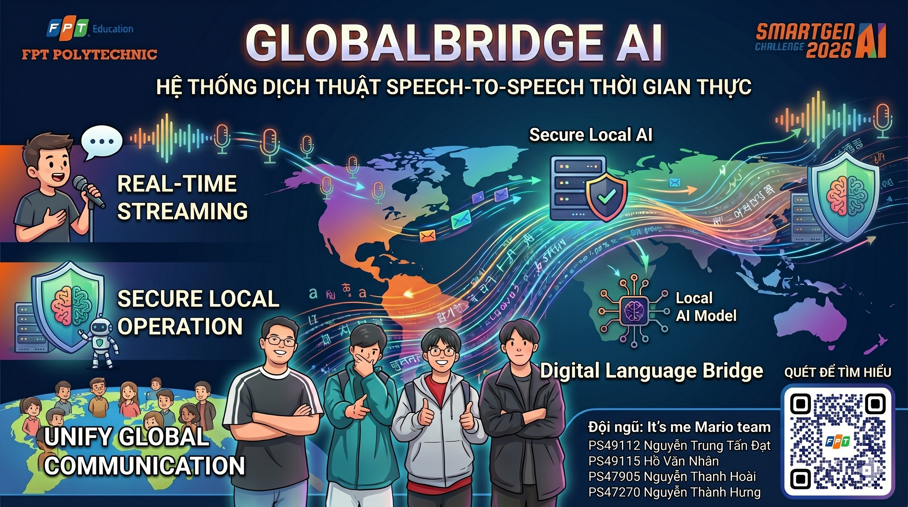
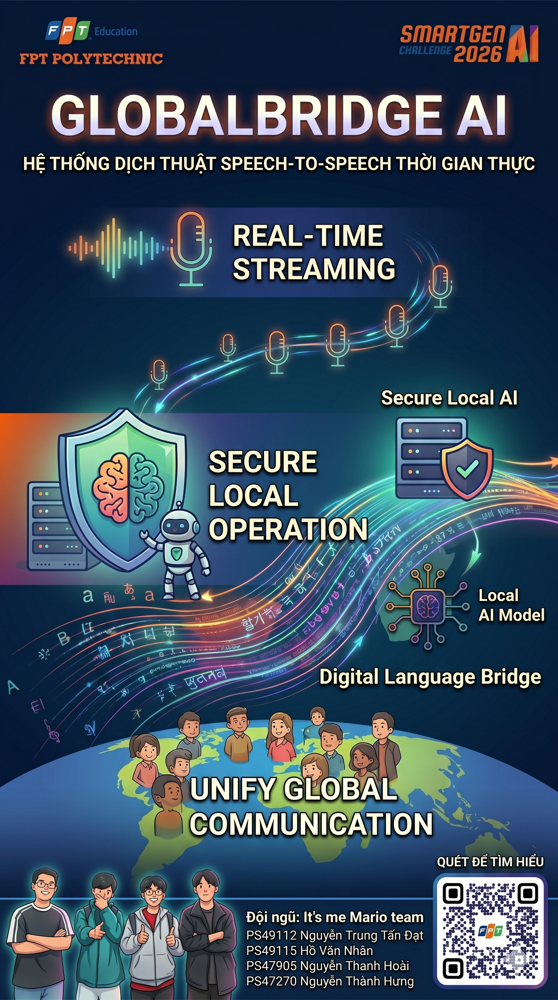
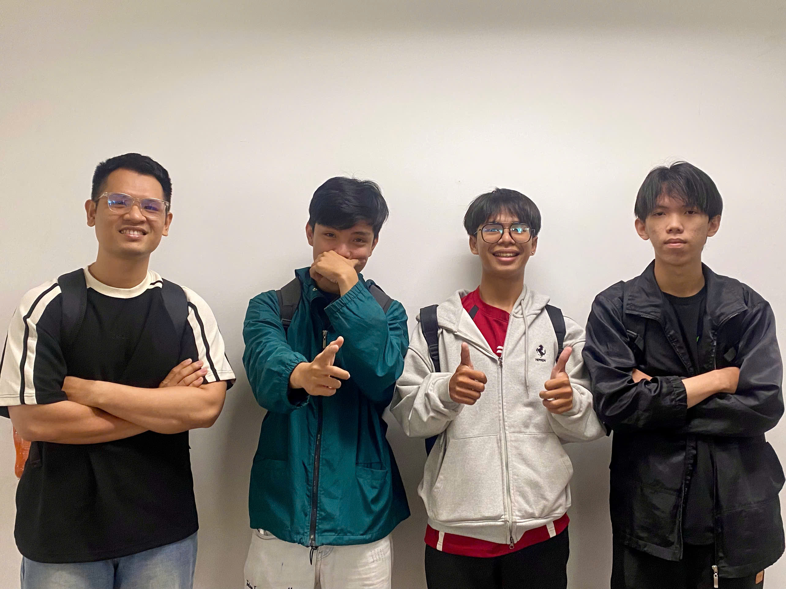

Real-time Streaming Translation & ASR Pipeline
Giải pháp đột phá giúp nhận dạng giọng nói và phiên dịch trực tiếp song hành thời gian thực. Chạy 100% Offline / Local, bảo mật dữ liệu tuyệt đối và không phát sinh bất kỳ chi phí API đám mây nào.

Rào cản ngôn ngữ trong giao tiếp trực tiếp đòi hỏi sự tức thời và chính xác, điều mà các công cụ dịch thuật cổ điển khó có thể đáp ứng trọn vẹn.
Dịch từng từ riêng lẻ mà không hiểu sắc thái và bối cảnh toàn câu dẫn đến những hiểu lầm hài hước hoặc nghiêm trọng trong giao tiếp.
Người dùng phải nói xong, chờ máy tải lên đám mây, xử lý và dịch lại. Sự ngắt quãng này phá vỡ nhịp điệu tự nhiên của một cuộc đối thoại.
Các giải pháp STT hiện nay (như Deepgram, Google Cloud) đòi hỏi đường truyền mạng liên tục và ngốn chi phí bản quyền khổng lồ khi mở rộng quy mô sử dụng.
Sự kết hợp hoàn hảo giữa các mô hình AI tiên tiến chạy local tạo nên một quy trình dịch thuật mượt mà và tối ưu nhất.
Sử dụng Sherpa-ONNX 30M để hiển thị từ ngay khi nói (<100ms) và PhoWhisper Large kiểm tra chỉnh sửa lại câu khi người dùng dừng nói.
Tích hợp mô hình ngôn ngữ lớn Qwen2.5-1.5B-Instruct để tự động sửa các lỗi phát âm sai hoặc từ đồng âm khác nghĩa dựa trên ngữ cảnh toàn bộ câu nói.
Bản dịch tạm thời cập nhật siêu tốc bởi MarianMT, trong khi bản dịch chính thức được tinh chỉnh bởi mô hình NLLB-200 của Meta kết hợp bộ nhớ đệm LRU.
Lọc các âm thanh tạp âm, tiếng quạt gió bằng Web Audio API tại client. Toàn bộ mô hình chạy offline bảo mật, bảo vệ sự riêng tư tuyệt đối cho người dùng.
AudioWorklet lọc 80Hz HPF & truyền 16kHz Int16
Silero VAD chia đoạn âm, Sherpa dịch interim cực nhanh
Hiệu chỉnh chính tả, sửa lỗi đồng âm theo văn cảnh
Dịch NLLB và render Word-Diff lên web mượt mà
Theo dõi đoạn ghi hình thực tế quá trình chạy thử nghiệm đầy đủ các tính năng của hệ thống GlobalBridge AI.
Nội dung demo bao gồm:
Poster giới thiệu chính thức của dự án GlobalBridge AI thiết kế dưới dạng khổ ngang.

Những gương mặt sinh viên nghiên cứu và xây dựng giải pháp GlobalBridge AI tại FPT Polytechnic.

Được hình thành từ khát vọng giải quyết bài toán giao tiếp không giới hạn mà không lệ thuộc vào internet hay chi phí hạ tầng lớn. Tập thể đội ngũ đã nỗ lực cấu hình, tối ưu hóa các mô hình học máy nhỏ gọn (Sherpa, PhoWhisper, MarianMT, Qwen) để chạy mượt mà ngay trên các máy tính cấu hình phổ thông của người dùng.